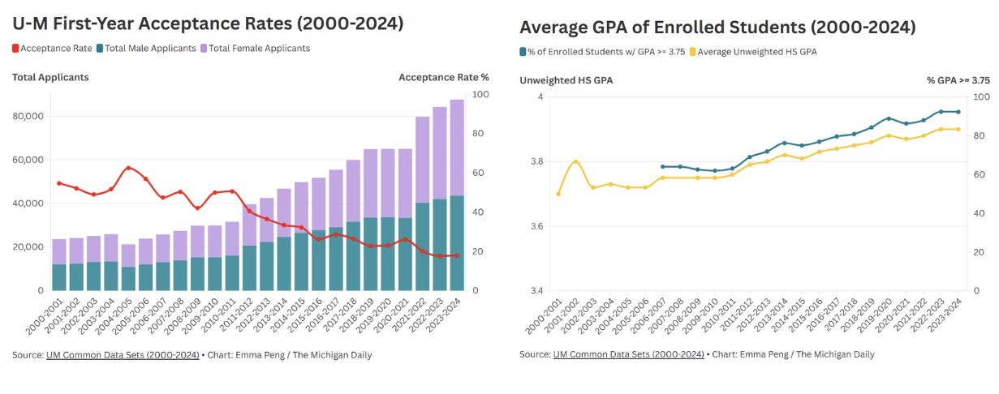
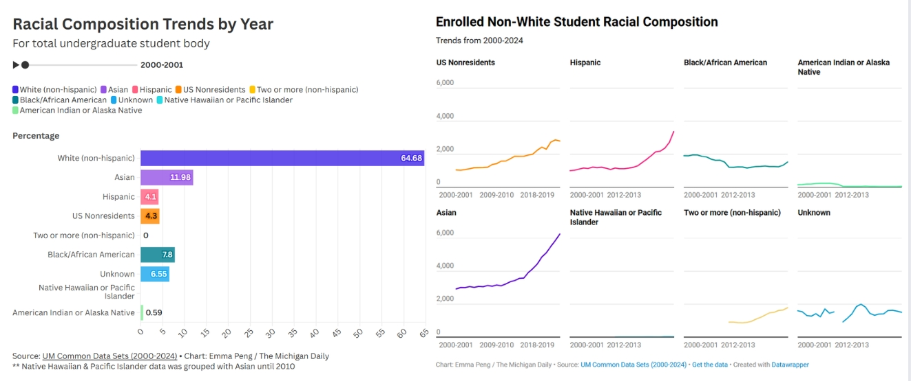
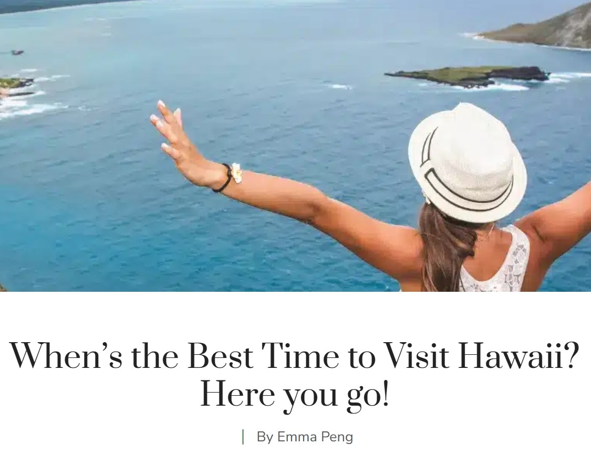

My ARTICLES & MEDIA
PIECES
Editorial, Journalism, & Content Writing
Welcome to the non-fiction side of my writing world.

24 years of UMich admissions: An inside look at acceptance rates & freshman profiles
Hailed as the home of the Leaders and the Best, the University of Michigan has
cemented its reputation as one of the top universities
in the country. With multiple national championships under its belt, more than a
dozen programs ranked in the top 10 and a vibrant
network of esteemed alumni, it’s no wonder that an increasing number of students
want to be a part of the community.
Admissions have become increasingly competitive throughout the 21st century, but how
exactly have admissions changed, and who have they changed for?
The U-M Admissions Series aims to break down and analyze these questions — starting
with over two decades of acceptance rates and
freshman academic profiles.
[READ MORE]

24 years of UMich admissions: How DEI initiatives have impacted admitted student representation
The 21st century has shone a spotlight on the importance of diversity, equity and
inclusion in higher education and beyond,
with the University of Michigan launching itself into the forefront of the stage.
With DEI 1.0 in 2016 and DEI 2.0 in 2023,
the University’s initiatives have gained attention nationwide — even leading New
York Times journalist Nicholas Confessore
to criticize the University’s DEI bureaucracy in his now widely publicized
investigative article.
Since the launch of DEI 1.0, the University has poured $250 million into DEI
programs. But how have such efforts
impacted U-M admissions over the years? The DEI 2.0 Year 1 Progress Report describes
the work of previous years
as “successful and promising” — but is this justified? Beyond the flashy statistics
and well-intended positivity,
have the University’s initiatives changed who is actually getting admitted?
[READ MORE]

The Best Time to Visit Hawaii: A Seasonal Guide
Hawaii is one of the most popular vacation destinations year-round. However, certain times of the year are the best time to visit Hawaii depending on what you’re looking for. This seasonal guide breaks down the best time for a Hawaiian vacation so that you can make the most out of your trip no matter the month! [READ MORE]
More Articles
And I write a lot.